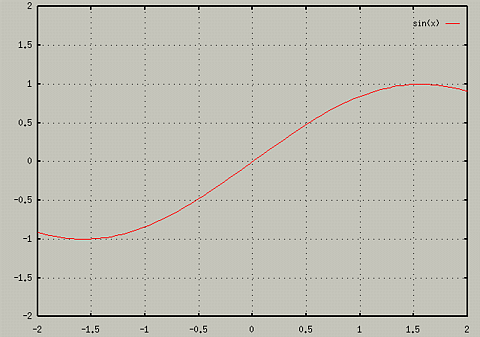
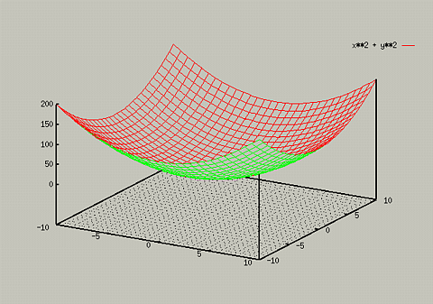

You can display a grid with the graph by using the set grid
command. To see if grids are being used, type show grid. For
example, if you typed the following,
You would get the following: 
Grids can be turned on for 3d plots as well. They often improve the 3D
perspective.
- set grid
- splot x**2 + y**2

To turn the grid feature off, type set nogrid.
Table of Contents - Previous - Using a Log Scale - Next - Overlaying Multiple Plots
College of Natural Sciences /
University of Northern Iowa /
manager@cns.uni.edu
Copyright © 1996 College of Natural Sciences. All Rights Reserved.
Last Modified: 10/29/96